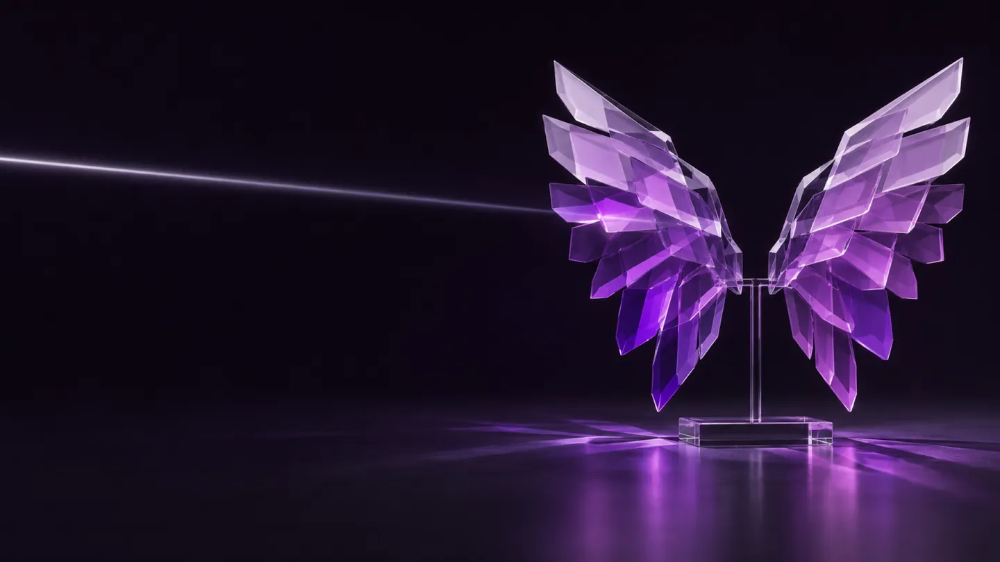
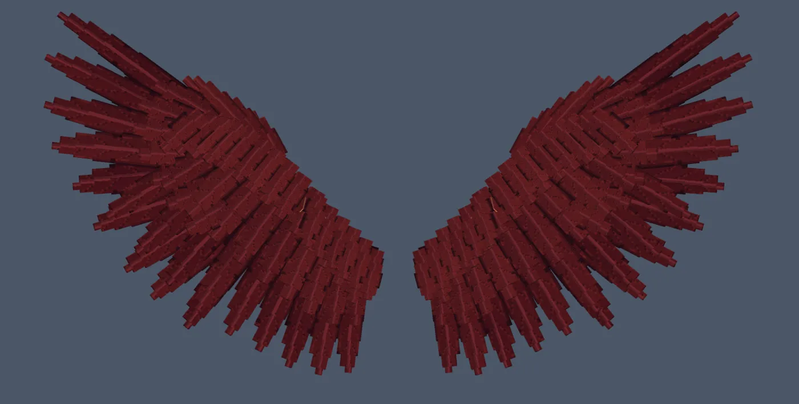
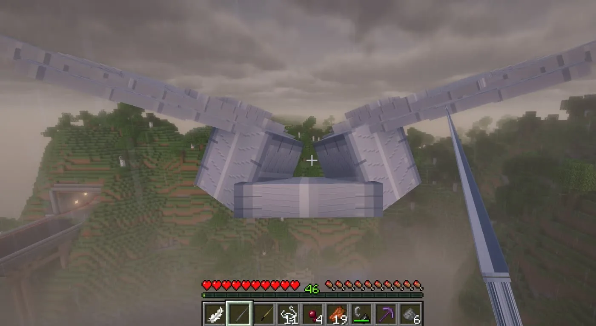
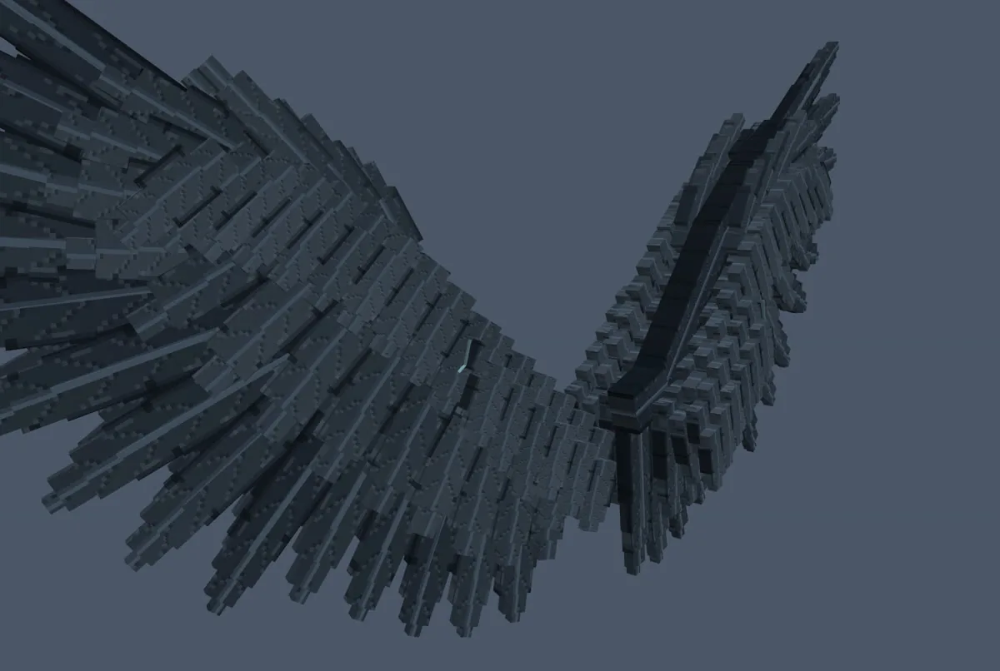

Minecraft plugin and models
Animated 3D angel wings for Minecraft: the AngelRanks Paper plugin, its resource pack and Blockbench wing prototypes.
The repository holds the AngelRanks Paper plugin (Paper 26.2 / 26.3, Java 25), its resource pack, black, white, crimson and gold Blockbench wing models and an AI bot experiment. The plugin offers four ranks, animated wings, a menu and powers. It was verified with local tests on Paper 26.2 and 26.3; there is no guarantee of long-term use on a real server. It is an independent fan project.
Gallery
Real screenshot




Facts
- Four ranks: Angel, Seraph, Archangel, Fallen
- Powers: snap, heal, blindness, night vision, teleport; also an angel blade and a death mark
- The bloody "implosion" effect is experimental
- Verified with local tests on Paper 26.2 and 26.3
- The Mineflayer-based AI bot was not ported to 26.3; you need your own API key
- No show images or audio in the repo; sound effects were synthesised from scratch
- Not a Windows .exe; it is a server plugin and a model pack
- Type
- Minecraft plugin and models
- Status
- Hobby prototype; the 3D wing design was shelved as a mod, the models are an archive/prototype
- Technology
- Java 25 (Paper plugin), Blockbench models, resource pack
- Licence
- MIT